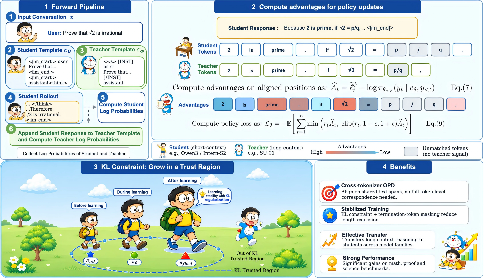
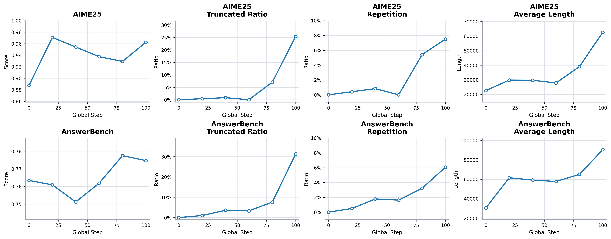
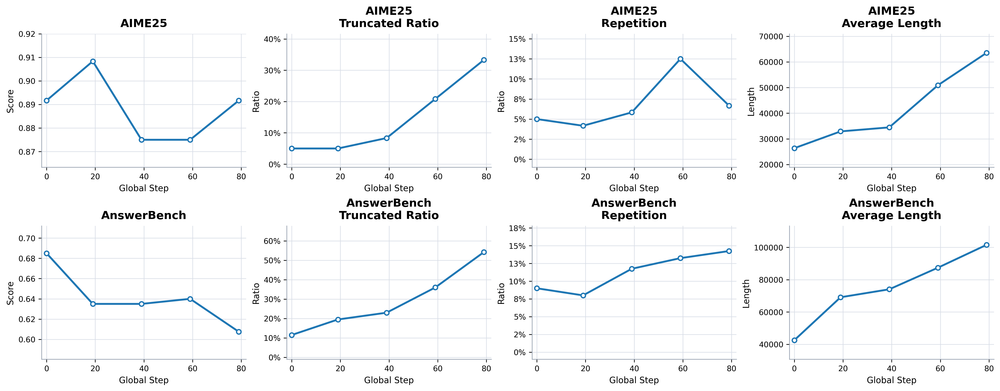
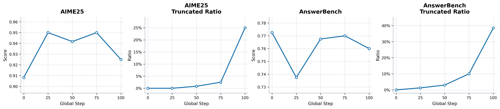
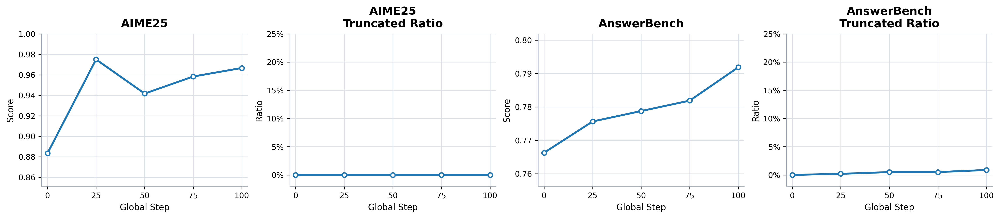
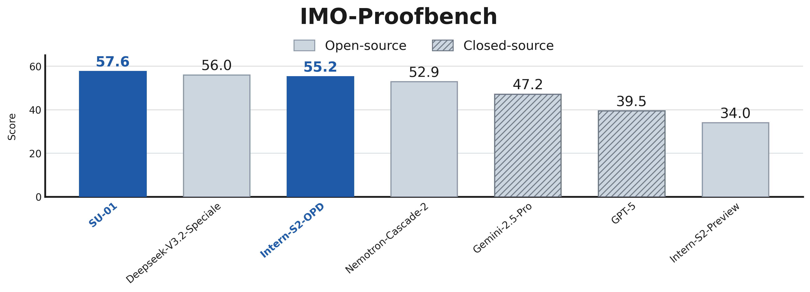
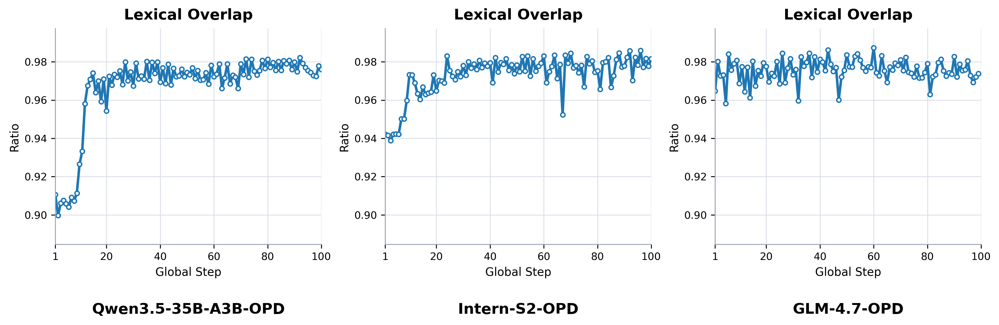

Transferring gold-medal-level proof-reasoning from a long-context teacher to short-context students — across tokenizers, without SFT on teacher trajectories.
†Co-first authors · ✉Corresponding authors · ★Project Lead
SU-01 Team, Shanghai AI Lab
On-policy distillation (OPD) offers a promising way to transfer reasoning capabilities from stronger teacher models, yet faces challenges including tokenizer mismatch, teacher–student distribution mismatch, response length explosion, and training instability. In this work, we study a setting where OPD transfers proof-reasoning capabilities from the long-context reasoning model SU-01 to short-context student models. To handle tokenizer differences, we perform OPD in a shared text space and align only tokens that occupy identical text spans under the student and teacher tokenizers.
Naive OPD leads to excessive generation length and frequent truncation, destabilizing training. We introduce a student reference KL loss and mask the advantages of special termination tokens (</think>, <|im_end|>). This constrains the student from drifting too far from its initial policy, mitigating the distribution mismatch and fostering steady length growth.
Experiments on same-family and different-family students — Qwen3, Qwen3.5, Intern-S2-Preview, GLM-4.7-Flash, Gemma-4-26B — show consistent gains in mathematical reasoning, especially natural-language math proving. Notably, Intern-S2-Preview improves by 21.2 points on ProofBench, reaching 55.2 and surpassing Gemini-2.5-Pro — while also improving science benchmarks such as HLE and HiPhO, suggesting OPD transfers reasoning capabilities that generalize beyond the mathematical training domain.
Cross-tokenizer OPD works without full token-level alignment: use student-generated text as the shared space and align only tokens occupying identical text spans under both tokenizers.
Direct cross-tokenizer OPD transfers proof-reasoning but causes excessive length growth, frequent truncation, and unstable training.
Masking special-termination-token advantages plus a student reference KL loss stabilizes training, reduces truncation, and improves final performance. Larger KL weight is needed when teacher and student differ more.
SimpleOPD works across model families without SFT on teacher trajectories, and a moderate increase in distillation length further benefits long-reasoning distillation.
The complete method is summarized below — from student rollout, to span-level token alignment, to the stabilized policy objective.

Let \(\mathbf{x}\) denote the input conversation as a list of messages. The student and teacher with different tokenizers may use different chat templates, denoted by \(\mathcal{C}_{\theta}\) and \(\mathcal{C}_{\phi}\). We first construct the student input context \(\mathbf{c}_{\theta}\) and sample a response-token sequence with the student policy executed by the rollout engine \(\pi_{\theta_{\mathrm{roll}}}\):
\[ y_{1:n} = (y_1,\ldots,y_n) \sim \pi_{\theta_{\mathrm{roll}}}(\cdot \mid \mathbf{c}_\theta). \]Decoding \(y_{1:n}\) via the student tokenizer gives the response surface string \(s\). Instead of passing the student context to the teacher, we reconstruct the teacher context text \(u_\phi\) using its own chat template and append the student response:
\[ c_\phi = \mathcal{C}_\phi(\mathbf{x}), \qquad u_\phi = c_\phi \oplus s, \]where \(\oplus\) denotes string concatenation. The complete text \(u_\phi\) is then tokenized with the teacher encoder, giving \(z_{1:m}\). This lets the teacher evaluate the student response under its native tokenizer and chat template — although \(z\) and \(y\) may differ, the response text being evaluated is identical on both sides. The incremental text spans contributed by response tokens satisfy:
\[ \bigoplus_{t=1}^{n} \tau_\theta(y_t) \;=\; \bigoplus_{i=1}^{m} \tau_\phi(z_i) \;=\; s. \]Define the cumulative response text preceding each student and teacher token as
\[ P_\theta(t) = \bigoplus_{k=1}^{t-1} \tau_\theta(y_k), \qquad P_\phi(i) = \bigoplus_{k=1}^{i-1} \tau_\phi(z_k), \]A teacher position \(i\) is aligned with a student position \(t\) if both tokenizations have consumed the same response prefix and the current tokens contribute the same text span:
\[ \mathcal{M} = \big\{\,(i,t) : P_\phi(i) = P_\theta(t) \;\wedge\; \tau_\phi(z_i) = \tau_\theta(y_t)\,\big\}. \]Equivalently, an aligned teacher–student pair covers the same start and end offsets in the shared response string \(s\). Tokens that overlap only partially are not aligned — the log-probability of one teacher token cannot be uniquely assigned to multiple student tokens, nor can the log-probabilities of multiple teacher tokens be merged into one student token.
For each student position \(t\), define the alignment indicator
\[ a_t = \mathbf{1}\big[\exists\, i \text{ such that } (i,t) \in \mathcal{M}\big]. \]Let \(\log\pi_\theta\) and \(\log\pi_\phi\) be the log-probabilities of the student and teacher policies. We construct a student-length teacher target:
\[ \widetilde{\ell}_t^{\phi} = \begin{cases} \log \pi_{\phi}\big(z_{i} \mid c_{\phi},\, z_{<i}\big), & a_t = 1,\\[2pt] \log \pi_\theta\big(y_t \mid c_{\theta},\, y_{<t}\big), & a_t = 0. \end{cases} \]Thus aligned positions inherit the teacher log-probability, while unmatched positions fall back to the student's own log-probability. We report the lexical overlap ratio
\[ \rho = \frac{|\mathcal{M}|}{n}, \]which measures the fraction of student response tokens that receive teacher supervision. The complete alignment procedure is shown in Algorithm 1.
The cross-tokenizer distillation objective is defined over aligned response positions:
\[ \mathcal{L}_{\mathrm{Distill}}(\theta) = \mathbb{E}_{y \sim \pi_\theta}\left[ \sum_{t=1}^{n} \log \pi_\theta(y_t \mid c_\theta, y_{<t}) - \widetilde{\ell}_t^{\phi} \right]. \]This objective is a token-aligned surrogate for the reverse KL divergence. It compares teacher and student probabilities only at positions where the two tokenizers induce the same local segmentation of the response string. When the tokenizers are identical, every student token is aligned and the objective reduces to
\[ \mathcal{L}_{\mathrm{Distill}}(\theta) = \mathbb{E}_{y \sim \pi_\theta}\left[\log \frac{\pi_\theta(y \mid c_\theta)}{\pi_\phi(y \mid c_\phi)}\right] = D_{\mathrm{KL}}\big(\pi_\theta(\cdot \mid c_\theta) \parallel \pi_\phi(\cdot \mid c_\phi)\big). \]When the tokenizers differ, the same response string is factorized into different token sequences, so the exact token-level KL is not directly computable. To enable multiple policy updates on the same rollout batch, we substitute the online log-probability with its pre-update counterpart for unmatched positions and use fixed policy advantages with the PPO clipped loss:
\[ \widehat{A}_t = \widetilde{\ell}_t^{\phi} - \log \pi_{\theta_{\mathrm{old}}}(y_t \mid c_\theta, y_{<t}), \qquad r_t = \frac{\pi_\theta(y_t \mid c_\theta, y_{<t})}{\pi_{\theta_{\mathrm{old}}}(y_t \mid c_\theta, y_{<t})}. \]The resulting objective is
\[ \mathcal{L}_\theta = -\mathbb{E}\left[ \sum_{t=1}^{n} \min\Big( r_t \widehat{A}_t,\; \mathrm{clip}(r_t, 1-\epsilon, 1+\epsilon)\, \widehat{A}_t \Big) \right]. \]Naive OPD makes students verbose and truncation-prone. Two simple fixes keep training steady:
Mask the OPD loss on structural tokens </think> and <|im_end|> — they control format and termination and need not match the teacher exactly.
Add a reference-KL term (\(k_{\mathrm{KL}} \in \{0.5, 1.5\}\)) to prevent the student policy from deviating excessively from its initial distribution, preserving general capabilities.
An IMO gold-medal-level mathematical reasoning model developed by our team, providing token-level supervision for on-policy distillation of its proof-generation capability.
Same-vocabulary and cross-tokenizer settings, spanning architectures and tokenizer designs:
Evaluation. ProofBench (non-verifiable, DeepSeek-V4-Flash judge, 4 rollouts averaged) plus AnswerBench & AIME25 (verifiable; rule-based verifier first, GPT-OSS-120B fallback, 8 rollouts averaged). Temperature 1.0 · top-p 0.95 · repetition penalty 1.0 · max response length 160K tokens. Best checkpoint selected on average of AIME@4 and AnswerBench@1.
From instability to steady gains — how masking and reference-KL stabilize cross-tokenizer OPD, and what it achieves on proof and science benchmarks.
During OPD training, Intern-S2-Preview shows modest gains but clear signs of degeneration: the truncation rate and repetition rate rise substantially while the average response length grows sharply. The effect is even more pronounced for Qwen3.5-35B-A3B, whose task performance deteriorates with a persistently high truncation rate. Apparent performance gains can come at the cost of increasingly verbose and unstable generation behavior.


Many generated responses fail to emit termination tokens such as </think>, suggesting the student is strongly affected by the teacher's long outputs and gradually loses the ability to terminate properly. We therefore mask the OPD loss on structural tokens </think> and <|im_end|> — these control the output format and termination behavior and need not match the teacher distribution exactly.

| Model | Proofbench@4 | AnswerBench@8 | AIME25@8 |
|---|---|---|---|
| SU-01 teacher | 45.00 | 77.50 | 94.60 |
| Intern-S2-Preview base | 21.70 | 76.03 | 88.33 |
| OPD + Spec Mask | 38.10 | 77.60 | 95.00 |
Masking improves training stability, but alone neither solves length expansion nor improves OPD performance.
We introduce a student reference KL loss (\(k_{\mathrm{KL}}=0.5\)) to prevent the student policy from deviating excessively from its initial distribution, preserving general capabilities during distillation. The truncation rate is effectively reduced to nearly zero, while AIME25 and AnswerBench improve consistently.

| Model | Proofbench@4 | AnswerBench@8 | AIME25@8 |
|---|---|---|---|
| SU-01 teacher | 45.00 | 77.50 | 94.60 |
| Intern-S2-Preview base | 21.70 | 76.03 | 88.33 |
| OPD + Ref KL | 38.50 | 79.10 | 95.80 |
OPD + Ref KL: ProofBench@4 21.70 → 38.50; AnswerBench@8 76.03 → 79.10; AIME25@8 88.33 → 95.80.
Combining special-token masking with the student reference KL loss achieves the strongest results (\(k_{\mathrm{KL}}=0.5\) for Qwen-series and Intern-S2-Preview; \(1.5\) for GLM-4.7-Flash).
| Model | Proofbench@4 | AnswerBench@8 | AIME25@8 | AMOBench@8 |
|---|---|---|---|---|
| SU-01 teacher | 45.00 | 77.50 | 94.60 | 61.75 |
| Qwen3-4B base | 11.42 | 47.50 | 71.25 | 23.00 |
| Qwen3-4B-OPD | 23.72 ↑12.30 | 64.50 ↑17.00 | 90.83 ↑19.58 | 35.00 ↑12.00 |
| Qwen3-30B-A3B base | 13.80 | 59.13 | 88.33 | 36.50 |
| Qwen3-30B-A3B-OPD | 36.47 ↑22.67 | 74.46 ↑15.33 | 93.75 ↑5.42 | 52.75 ↑16.25 |
| Qwen3.5-4B base | 15.90 | 60.94 | 86.67 | 32.00 |
| Qwen3.5-4B-OPD | 28.61 ↑12.71 | 67.84 ↑6.90 | 91.67 ↑5.00 | 51.25 ↑19.25 |
| Qwen3.5-35B-A3B base | 26.78 | 73.16 | 94.60 | 57.25 |
| Qwen3.5-35B-OPD | 42.39 ↑15.61 | 80.15 ↑6.99 | 96.66 ↑2.06 | 61.25 ↑4.00 |
| GLM-4.7-Flash base | 30.75 | 69.59 | 92.08 | — |
| GLM-4.7-Flash-OPD | 37.08 ↑6.33 | 72.78 ↑3.19 | 93.75 ↑1.67 | — |
| Intern-S2-Preview base | 21.70 | 76.03 | 88.33 | 58.00 |
| Intern-S2-OPD | 44.50 ↑22.80 | 80.10 ↑4.07 | 95.00 ↑6.67 | 59.50 ↑1.50 |
Consistent gains across every student family — same-vocabulary and cross-tokenizer alike. AMOBench (Australian Mathematical Olympiad) further validates the reasoning transfer.
We also evaluate ProofBench using Gemini-2.5-Pro as the judge, following the same evaluation setting as SU-01. Intern-S2-OPD improves from 34.0 to 55.2 — a +21.2 point gain — surpassing Gemini-2.5-Pro and GPT-5, and significantly narrowing the gap to SU-01 and DeepSeek-V3.2-Speciale.


Despite tokenizer differences, a large portion of student-generated text can be matched to teacher tokens through shared surface spans. Partial alignment in cross-tokenizer OPD therefore preserves a substantial amount of usable training signal — without requiring full tokenizer compatibility.
| Model | FrontierScience Olympiad | HLE (text-only) | HiPhO | FrontierScience Research |
|---|---|---|---|---|
| SU-01 teacher | 61.5 | 20.7 | 35.0 | 11.7 |
| Intern-S2-Preview base | 60.6 | 19.6 | 38.6 | 1.7 |
| Intern-S2-OPD | 60.9 | 20.5 | 41.1 | 5.0 |
Trained only on math proof data, Intern-S2-OPD keeps its broad scientific reasoning — and even surpasses SU-01 on HiPhO (38.6 → 41.1), suggesting OPD may further benefit physics-oriented reasoning.
| Model | Proofbench@4 | AnswerBench@8 | AIME25@8 |
|---|---|---|---|
| SU-01 teacher | 45.00 | 77.50 | 94.60 |
| Intern-S2-Preview base | 21.70 | 76.03 | 88.33 |
| OPD proof + verifiable data | 38.50 | 81.10 | 95.00 |
| OPD proof data | 44.50 | 80.10 | 95.00 |
Proof-focused data is the better transfer medium: 44.50 on ProofBench@4, approaching the teacher SU-01. Adding verifiable math data only marginally helps AnswerBench@8 (80.10 → 81.10) while weakening proof transfer (44.50 → 38.50).
| Model | Length | Proofbench@4 | AnswerBench@8 | AIME25@8 |
|---|---|---|---|---|
| SU-01 teacher | — | 45.00 | 77.50 | 94.60 |
| Qwen3.5-35B-A3B | 6k | 40.07 | 77.97 | 96.25 |
| Qwen3.5-35B-A3B | 32k | 42.39 | 80.16 | 96.67 |
For long-context proof reasoning, 6k is insufficient to capture the teacher's reasoning patterns. Extending distillation length from 6k → 32k improves all benchmarks, most strongly on ProofBench — longer reasoning traces better approximate the teacher's long-context capability.
With \(k_{\mathrm{KL}} = 1.0\), GLM reaches 100% truncation after only 40 steps — a stronger reference-KL coefficient is needed when teacher and student differ more substantially.
| Model | Student KL Coef. | Proofbench@4 | AnswerBench@8 | AIME25@8 |
|---|---|---|---|---|
| SU-01 teacher | — | 45.00 | 77.50 | 94.60 |
| GLM-4.7-Flash base | — | 30.75 | 69.59 | 92.08 |
| GLM-4.7-Flash-OPD | 1.5 | 37.08 | 72.78 | 93.75 |
| GLM-4.7-Flash-OPD | 2.0 | 36.99 | 72.75 | 93.80 |
A stronger student KL coefficient controls truncation for GLM-4.7-Flash while still allowing effective transfer. But too large a coefficient (2.0) overly constrains the policy and limits further gains.
We studied on-policy distillation from a long-context reasoning model (SU-01) to short-context student models. To handle tokenizer differences, we performed OPD in a shared text space and aligned only tokens occupying identical text spans under the student and teacher tokenizers. Naive distillation led to severe training instability — output length kept increasing, termination tokens were often missing, and many responses were truncated. We introduced two simple but effective stabilization techniques:
These techniques substantially reduced length explosion and truncation while improving reasoning performance. Experiments across same-family and different-family student models showed consistent gains, with Intern-S2-Preview achieving a 21.2-point improvement on ProofBench — an effective and generalizable way to transfer long-context reasoning capabilities to short-context models across different tokenizers and model families.
@misc{he2026simpleopdsimpletokenizeragnosticonpolicy,
title={SimpleOPD: Simple Tokenizer-Agnostic On-Policy Distillation for Long-Context Reasoning},
author={Haonan He and Haodi Lei and Yun Luo and Haoran Zhang and Shunkai Zhang and Yizhuo Li and Shengji Tang and Zhilin Wang and Runzhe Zhan and Lei Bai and Ganqu Cui and Fangchen Yu and Yafu Li and Peng Ye and Ning Ding and Yu Cheng},
year={2026},
eprint={2608.14277},
archivePrefix={arXiv},
primaryClass={cs.CL},
url={https://arxiv.org/abs/2608.14277},
}We will release the code and the arXiv version soon.